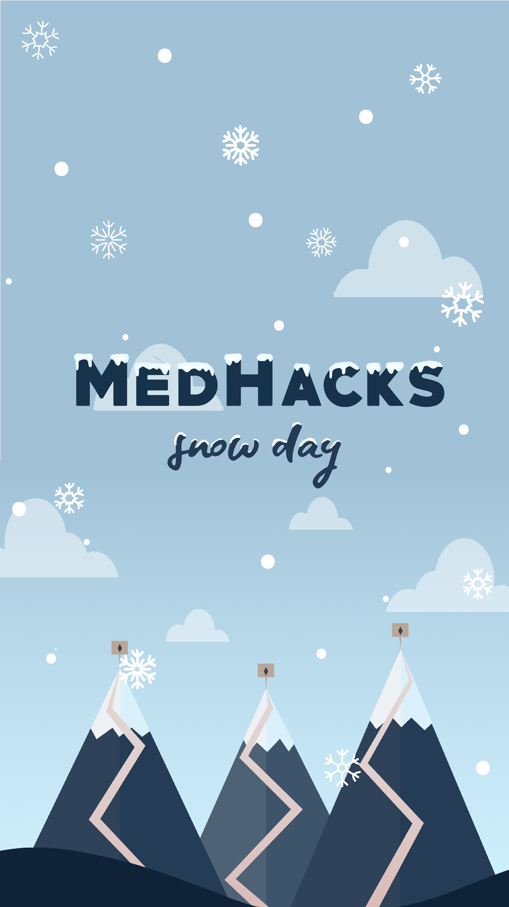
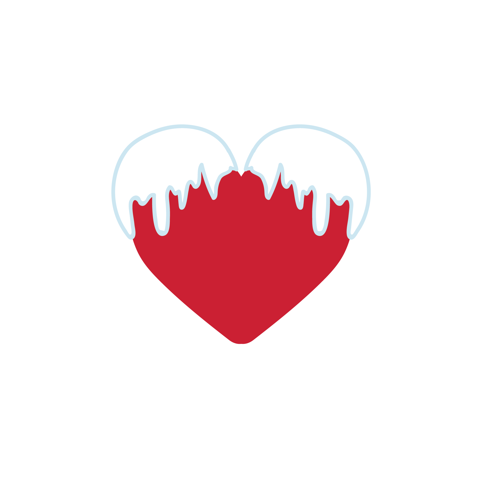

September 7-9, 2018 @ JHU Medical Campus
Hosted at the nation’s pinnacle center for care, MedHacks is the world’s premier and largest medical hackathon. Join us at the Johns Hopkins Hospital for 36 hours to revolutionize the global state of healthcare!
MedHacks was started in 2015 with the mission to bring together talented and diverse minds from all backgrounds and foster collaboration towards solving the world’s most pressing medical issues.
In the past three years, MedHacks has been attended by thousands from over 500 institutions and 30 countries, has formed partnerships with companies at the forefront of medicine and technology including Blue Cross Blue Shield, CVS Health, Google, and KPCB, and has established itself as one of the world’s most recognized and influential medical hackathons.
The MedHacks brand has grown into something larger than our flagship medical hackathon with the introduction of 2 new events this spring: (1) Mini-MedHacks: a 1-day medical hackathon for Baltimore city high-school students and (2) The China-U.S HealthTech Forum: bringing together speakers such as Jim Lai, the VP of Tencent, and Lee Chang, the VP of Baidu Ventures, to talk about the global state of healthcare innovations.
Join us at MedHacks 2018: Snow Day, where we are bringing the largest healthcare & technology companies in collaboration with the Johns Hopkins Medicine Network to revolutionize the way we think about medicine.
We believe that the most pressing medical challenges must be solved by interdisciplinary and diverse teams of people. We don’t care about whether or not you’ve won coding competitions, or even if you’re pursuing an engineering or CS degree. You don’t need a PhD or MD to innovate in healthcare, all you need is a passion for bettering humanity.
Last year at MedHacks 2017, we hosted over 750 hackers from more than 300 schools and 15 countries, with diverse majors ranging from public health to anthropology to computer science. We had teams of all ages including undergraduates, graduate students, and medical professionals all coming together with diverse expertise and backgrounds.
We’re thrilled to introduce the theme for MedHacks 2018: Snow Day! It’s been a long, exhausting year, and we know that we could all use a day (or three) to relax, not think about school work, huddle up with a computer and some teammates, and focus on innovating healthcare. Even though September in Baltimore is not exactly known for its below-zero temperatures, we’ll be sure to bring the cool within the Johns Hopkins Hospital with our trusty moose, Melvin, by our sides!
Originally hailing from the chilliest, northernmost forests of the United States, Melvin the Moose spent his early days by rivers, feasting on leaves and shrubs without a care in the world. One day he ventured a little (...okay, a lot) farther than usual on his journey to find a new grazing spot and stumbled upon the Johns Hopkins University campus. He was amazed - there was so much greenery to munch on! It was a dream come true. After taking a bite of grass, he felt a slight tingle in his body.
After getting a bite to eat, Melvin felt his body shrink to the size of a small human. His front hooves became dexterous, and he suddenly gained the ability to crunch numbers and function long days and nights without sleep. Disoriented by this sudden transition, he was found sprawled out under the gazebo by a MedHacks student. He was taken in and nursed back to health with the rare elixir of Soylent.
Touched by the student’s kindness, Melvin the Moose joined MedHacks to meet more of these awesome people (and also to get his hooves on more of that delicious Soylent). He fit right in, and now is an integral member of our family. However, one of his projects, Melvin accidently wrote the wrong code, somehow manipulating space-time to bring winter home a lot earlier than usual... which is why our theme for MedHacks 2018 is Snow Day!
We welcome anyone passionate about the MedHacks mission to apply to join our team as a Campus Ambassador. What this entails is spreading the word about MedHacks at your university/city. Campus ambassadors are an integral part of the MedHacks organizing team and receive a guaranteed acceptance to MedHacks, a guaranteed travel reimbursement, and custom swag.
We are closing campus ambassador applications on July 20th at 11:59pm EST. Please email info@medhacks.org to learn how you can get involved.
At MedHacks 2018: Snow Day, you’ll have the choice of choosing a project within our three tracks. The hack you decide to do must fall within the track that you choose and you will be judged within your track for a track-specific prize. The three tracks
from MedHacks 2017 were Medication Adherence with CVS Health, Patient Safety & Quality with Hopkins Medicine, and Access to Care with Blue Cross Blue Shield.

The Johns Hopkins Armstrong Institute for Patient Safety and Quality and the Johns Hopkins School of Nursing are proud to sponsor a Patient Safety and Quality track at MedHacks 2018. Your participation in this track and innovative ideas can further their shared commitment to eliminate preventable harm to patients and achieve the best outcomes at the lowest cost possible. The three focus areas highlighted in the track are Geriatric Safety, Joy of Practice, and Digital Approaches to Care Management. There will be a number of faculty mentors from both the Armstrong Institute and the School of Nursing available for the entire weekend to assist you with your project.
Some other useful links are provided below:
The New Script of Nursing
Understanding CUSP and the CUSP Team
Winners of this track will be given private professional development sessions with leadership from within the Johns Hopkins University network.
We at the BCBS Institute are excited to sponsor the Community Health Infrastructure track at MedHacks 2018. The future of health is governed by the capacity to better design and manage the Infrastructure within the community setting. The Community Health Infrastructure track extends into the community setting to address barriers, such as primary care desert, pharmacy desert, nutrition desert, transportation desert, and fitness desert. The window of opportunity exists to help shape the future of the new health service delivery model for the next decade.
Some other useful links are provided below:
BCBSA Institute
BCBSA partnering with Lyft, CVS, and Walgreens
Winners of this track will be given private professional development sessions with John Banta, the Executive Director of the Blue Venture Fund.
The Johns Hopkins University Alliance for a Healthier World through its Transformative Technologies and Institutions theme is proud to sponsor this year’s newly established “Open Science to Advance Health Equity” track. Your team’s mission is to help us advance health equity through an open science “hack.’ By health equity, we mean not just the finding of disparity, but also coming up with solutions to reduce or resolve them.
Your project might build upon the following focus areas: Scaling Technology Platforms, Making Data Actionable, or Empowering Patients.
Some quick links to guide you in choosing this track:
A dedicated webpage with resources to jumpstart your efforts
The winning team will receive $500 plus free consultation with the Hopkins Social Innovation Lab. Teams with at least one Hopkins student also eligible for $1000 in translational support from Hopkins Fast Forward U.
MedHacks receives thousands of applications from talented and diverse people all around the world every year, but unfortunately we don’t have the space to accommodate everyone who would like to attend.
MedHacks prides itself on being accessible for all students, especially those without any kind of computing background, and so we try as hard as possible to reflect that in the population of participants at the event. We encourage all individuals interested in any (or all!) of the fields of medicine, technology, and entrepreneurship to apply. We’d love to have you!
We follow a rolling application basis, so the earlier you apply, the more likely you’ll be able to be accepted! General applications will be closing on August 31st at 11:59 PM EST. Applications for JHU students close on September 3rd at 11:59 PM EST.
This year, in order to streamline the application process, our talented team of developers have developed an application portal. Once you create an account you can submit an application, view the status of your application and view any resources.
If you are interested in receiving a travel reimbursement, you must indicate this on your application. You can then fill out travel reimbursement applications if you have indicated it on their application. We offer reimbursements in $50, $100, $250 increments depending on where you are coming from.
The deadline for a National/International travel reimbursement (up to $250) is July 20th at 11:59 PM EST. The deadline for a Midwest/Regional travel reimbursement (up to $100) is August 15th at 11:59 PM EST.
Additionally, we’ve previously sent buses to universities such as the University of Maryland and UMBC, and would love to consider sending to yours as well! Please contact us here if you’re interested in having a bus from your school.
Please note that if your forms are not filled out correctly by the due date, you will not receive a travel reimbursement. There will be no exceptions to this rule.
Roy Ziegelstein, M.D., MACP is the Vice Dean for Education at Johns Hopkins University School of Medicine and the Vice Chair of Humanism in the Department of Medicine at Johns Hopkins Bayview Medical Center.
Dr. Ziegelstein has been an NIH-funded basic and clinical investigator in cardiology, with research focused on vascular biology. For the past 20 years, he has been a leader in research on depression and cardiovascular disease. Dr. Ziegelstein also directed the internal medicine residency training program at Johns Hopkins Bayview from 1997-2006. He co-directs the Aliki Initiative, a program for internal medicine residents that is focused on the practice of patient-centered care.
Trent Haywood, M.D., J.D., is chief medical officer for the BlueCross BlueShield Association (BCBSA), a national federation of 36 independent, community-based and locally operated Blue Cross and Blue Shield companies. The Blue System is the nation’s largest health insurer covering one-in-three of all Americans.
As the Association’s chief medical officer, Haywood supports the innovation of BlueCross and BlueShield companies in communities around the country as they improve the choices of healthcare quality and patient safety for their members. Haywood also leads the BlueCross BlueShield Institute, a first-of-its-kind benefit corporation established to address social determinants of health through technology and strategic collaborations.
| Time | Event | Location |
|---|---|---|
| 3:00-5:00 PM | Registration | Turner Auditorium Terrace |
| 3:00-5:30 PM | Sponsor Fair | Turner Concourse |
| 6:00-7:30 PM | Opening Ceremony | Turner Auditorium |
| 7:30-8:30 PM | Dinner | Turner Concourse |
| 8:30-10:30 PM | Track Pitching Session | Rooms tbd |
| 10:30-12:00 AM | Team Formation and Registration | tbd |
| 12:00 AM | Hacking Begins! | tbd |
| Time | Event | Location |
|---|---|---|
| 12:30 AM | Midnight Snack | tbd |
| 8:30 AM | Breakfast | tbd |
| 10:00-11:15 PM | Big Data in Healthcare Panel | Turner Auditorium |
| 12:00 PM | Lunch | tbd |
| 1:00-7:00PM | Workshops (TBA) | tbd |
| 3:00PM | Afternoon Snack | tbd |
| 6:30 PM | Dinner | tbd |
| 7:00PM | Team Registration Due | tbd |
| Time | Event | Location |
|---|---|---|
| 12:30 AM | Midnight Snack | tbd |
| 8:30 AM | Breakfast | tbd |
| 9:30 AM | Final Submissions Due on DevPost | tbd |
| 10:00-11:45 AM | Judging Round 1 | tbd |
| 12:00 PM | Judging Round 1 Results | tbd |
| 12:00 - 2:00 PM | Snacks and 2nd Sponsor Fair | tbd |
| 12:30-2:00 PM | Judging Round 2 | tbd |
| 2:00-3:00 PM | Lunch | tbd |
| 3:00-4:00 PM | Closing Ceremony | Turner Auditorium |
| Time | Event |
|---|---|
| 3:00-5:00 PM | Registration |
| 3:00-5:45 PM | Sponsor Fair |
| 6:00-7:30 PM | Opening Ceremony |
| 7:30-8:30 PM | Dinner |
| 8:30-10:30 PM | Track Pitching Sessions |
| 10:30-12:00 AM | Team Formation and Registration |
| 12:00 AM | Hacking Begins! |
| Time | Event | |
|---|---|---|
| 12:30 AM | Midnight Snack | |
| 8:30 AM | Breakfast | |
| 10:30-2:00 AM | Big Data in Healthcare Panel | tbd |
| 12:00 PM | Lunch | |
| 1:00-7:00 PM | Workshops | |
| 3:00 PM | Afternoon Snack | |
| 6:30 PM | Dinner | |
| 7:00 PM | Team Registration Due |
| Time | Event |
|---|---|
| 12:30 AM | Midnight Snack |
| 8:30 AM | Breakfast |
| 9:30 AM | Submissions Due on DevPost |
| 10:00-11:45 AM | Judging Round 1 |
| 12:00 PM | Judging Round 1 Results |
| 12:00-2:00 PM | Snacks and 2nd Sponsor Fair |
| 12:30-2:00 PM | Judging Round 2 |
| 2:00-3:00 PM | Lunch |
| 3:00-4:00 PM | Closing Ceremony |
Applications for MedHacks 2018 are open! Please sign into our application portal here.
Sign into the MedHacks application portal here, and your application status, as well as the status of any other pending applications (travel reimbursements, etc), will be displayed on your profile page.
At least four members of the MedHacks executive team read each and every application made to MedHacks and decide as a group whether to offer acceptance to a applicant. All MedHacks admission decisions are final and we do not offer the reasoning behind any applicant's acceptance or rejection for any reason.
July 20 : Deadline for Interational and West Coast travel reimbursement applications.
August 14 : Deadline for Midwest and Regional travel reimbursement applications.
August 31 : General application deadline.
MedHacks 2018 is located at the Turner Auditorium in the Ross Research Building at the Johns Hopkins Medical Campus in East Baltimore, MD. The Ross Research Building is located at 720 Rutland Avenue, Baltimore, MD 21205. If you are traveling from the Homewood Campus, you can take the JHMI or special MedHacks buses to the event. If you are driving to the event, there will be parking on campus and more details will be emailed out closer to the event. If you are coming from the airport, train station, or hotel, we highly recommend you take a cab/lyft to the building. The medical campus is in the city, so please be safe when traveling to the event.
Sign into the MedHacks application portal here, and your application status, as well as the status of any other pending applications (travel reimbursements, etc), will be displayed on your profile page.
At least four members of the MedHacks executive team read each and every application made to MedHacks and decide as a group whether to offer acceptance to a applicant. All MedHacks admission decisions are final and we do not offer the reasoning behind any applicant's acceptance or rejection for any reason.
July 20 : Deadline for Interational and West Coast travel reimbursement applications.
August 14 : Deadline for Midwest and Regional travel reimbursement applications.
August 31 : General application deadline.
MedHacks 2018 is located at the Turner Auditorium in the Ross Research Building at the Johns Hopkins Medical Campus in East Baltimore, MD. The Ross Research Building is located at 720 Rutland Avenue, Baltimore, MD 21205. If you are traveling from the Homewood Campus, you can take the JHMI or special MedHacks buses to the event. If you are driving to the event, there will be parking on campus and more details will be emailed out closer to the event. If you are coming from the airport, train station, or hotel, we highly recommend you take a cab/lyft to the building. The medical campus is in the city, so please be safe when traveling to the event.
Parking will be free at the Washington Street Parking Garage, 701 N Washington St, Baltimore, MD 21205, which closes at MIDNIGHT on Friday and is open FREE of charge on Saturdays and Sundays from 7am - 7pm. As long as you enter on Friday before Midnight and leave on Sunday before 7pm, it should be completely free of charge.
Anyone is eligible to participate in MedHacks 2018, however if you’re under 18, a parent or guardian must be in the Baltimore area at all times during the event. We also do not offer travel reimbursements to minors.
If you’re a graduate student or professional, you can choose to join MedHacks either as a participant or as a mentor!
That’s more than OK! In fact, that’s encouraged! We love introducing people from all kinds of backgrounds to the world of innovation.
If you are accepted and remarked on your application that you would need a travel reimbursement, you may be invited to apply for a travel reimbursement. In that case, sign into the MedHacks application portal and follow the links for the travel reimbursement application.
Once you are accepted for a reimbursement, you must submit a VALID receipt. Guidelines for valid receipts are here. Your reimbursement is contingent upon your submitting a valid receipt. Failure to do so will result in MedHacks’ inability to issue said reimbursement.
That’s perfectly alright! In fact, we don’t allow participants to enter with an idea they’ve been working on for a while and encourage teams to be formed during one of MedHacks’ ideation sessions.
Applications for MedHacks 2018 are open! Please sign into our application portal here.
Sign into the MedHacks application portal here, and your application status, as well as the status of any other pending applications (travel reimbursements, etc), will be displayed on your profile page.
At least four members of the MedHacks executive team read each and every application made to MedHacks and decide as a group whether to offer acceptance to a applicant. All MedHacks admission decisions are final and we do not offer the reasoning behind any applicant's acceptance or rejection for any reason.
July 20 : Deadline for Interational and West Coast travel reimbursement applications.
August 14 : Deadline for Midwest and Regional travel reimbursement applications.
August 31 : General application deadline.
MedHacks 2018 is located at the Turner Auditorium in the Ross Research Building at the Johns Hopkins Medical Campus in East Baltimore, MD. The Ross Research Building is located at 720 Rutland Avenue, Baltimore, MD 21205. If you are traveling from the Homewood Campus, you can take the JHMI or special MedHacks buses to the event. If you are driving to the event, there will be parking on campus and more details will be emailed out closer to the event. If you are coming from the airport, train station, or hotel, we highly recommend you take a cab/lyft to the building. The medical campus is in the city, so please be safe when traveling to the event.
Parking will be free at the Washington Street Parking Garage, 701 N Washington St, Baltimore, MD 21205, which closes at MIDNIGHT on Friday and is open FREE of charge on Saturdays and Sundays from 7am - 7pm. As long as you enter on Friday before Midnight and leave on Sunday before 7pm, it should be completely free of charge.
Anyone is eligible to participate in MedHacks 2018, however if you’re under 18, we ask that a parent or guardian be in the Baltimore area at all times during the event.
If you’re a graduate student or professional, you can choose to join MedHacks either as a participant or as a mentor!
That’s more than OK! In fact, that’s encouraged! We love introducing people from all kinds of backgrounds to the world of innovation.
If you are accepted and remarked on your application that you would need a travel reimbursement, you may be invited to apply for a travel reimbursement. In that case, sign into the MedHacks application portal and follow the links for the travel reimbursement application.
Once you are accepted for a reimbursement, you must submit a VALID receipt. Guidelines for valid receipts are here. Your reimbursement is contingent upon your submitting a valid receipt. Failure to do so will result in MedHacks’ inability to issue said reimbursement.
That’s perfectly alright! In fact, we don’t allow participants to enter with an idea they’ve been working on for a while and encourage teams to be formed during one of MedHacks’ ideation sessions.